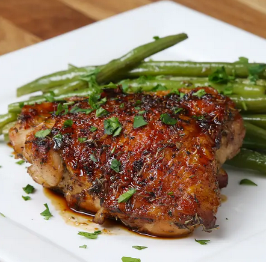

One-pan Honey Garlic Chicken

Description:
A delectably baked, perfectly seasoned chicken dish that is sure to make anyone lucky enough to try it ask for seconds.
Ingredients:
- 6 bone-in, skin-on chicken thighs
- salt, to taste
- pepper, to taste
- 1 tablespoon unsalted butter
- 3 cloves garlic
- 1 tablespoon brown sugar
- ¼ cup honey
- 1 teaspoon dried thyme
- 1 teaspoon dried oregano
- 1 lb green beans
Steps:
- Preheat oven to 400˚F (200˚C)
- Season chicken thighs with salt and pepper.
- Melt 1 tablespoon butter in a large ovenproof skillet over medium heat. Add chicken, skin-side down, and sear both sides until golden brown. (The skin side will take much longer, in order to properly render the fat and crisp up the skin.)
- Remove chicken thighs and set aside. Pour out any excess fat, but leave some in for the sauce.
- Add garlic, stir until fragrant, then add brown sugar, honey, thyme, and oregano, and stir. Reduce heat to low.
- Return chicken to the skillet. Coat the chicken in the sauce.
- Add green beans to skillet.
- Bake for 25 minutes or until chicken is cooked through.
- Enjoy!